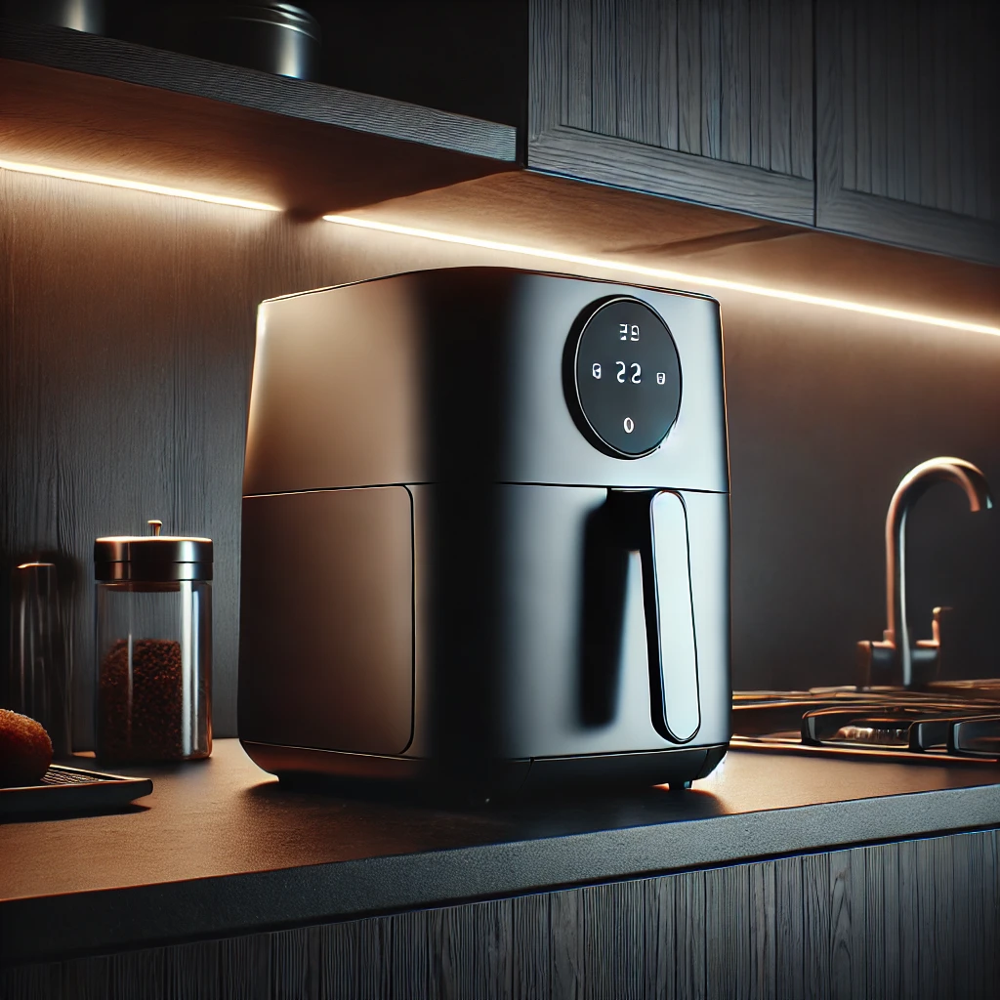

Best Air Fryer Accessories You Need
Air fryers have become a kitchen essential for many households, offering a healthier alternative to traditional frying methods. To get the most out of your air fryer, there are several accessories that can enhance your cooking experience. Here are some of the best air fryer accessories you need to elevate your air frying game.
1. Air Fryer Parchment Paper Liners
Benefits:
- Easy Clean-Up: Prevents food from sticking to the basket.
- Ventilation Holes: Ensures even air circulation for consistent cooking.
- Heat-Resistant: Safe for high temperatures.
Why You Need It:
Air fryer parchment paper liners make clean-up a breeze by preventing food from sticking to the basket. They also help maintain the integrity of your air fryer’s non-stick coating, prolonging its lifespan.
2. Silicone Air Fryer Liners
Benefits:
- Reusable: Eco-friendly and cost-effective.
- Non-Stick Surface: Easy to clean and maintain.
- Flexible and Durable: Can withstand high temperatures.
Why You Need It:
Silicone air fryer liners are a reusable alternative to parchment paper, providing a non-stick surface that is easy to clean. Their flexibility and durability make them a versatile addition to your kitchen.
3. Air Fryer Baking Pan
Benefits:
- Versatile Cooking: Ideal for baking cakes, bread, quiches, and more.
- Non-Stick Coating: Ensures easy release of baked goods.
- Dishwasher Safe: Easy to clean.
Why You Need It:
An air fryer baking pan expands your cooking possibilities, allowing you to bake a variety of dishes. Its non-stick coating ensures that your baked goods come out perfectly every time.
4. Air Fryer Rack
Benefits:
- Double-Layer Cooking: Increases the capacity of your air fryer.
- Stainless Steel: Durable and easy to clean.
- Multi-Purpose: Can be used for grilling, roasting, and dehydrating.
Why You Need It:
An air fryer rack allows you to cook more food at once by adding a second layer. This is especially useful for large families or when entertaining guests. Its versatility makes it a must-have accessory.
5. Air Fryer Silicone Tongs
Benefits:
- Heat-Resistant: Safe to use at high temperatures.
- Non-Slip Grip: Easy to handle food without slipping.
- Dishwasher Safe: Easy to clean.
Why You Need It:
Silicone tongs are essential for safely handling food in and out of the air fryer. Their heat-resistant and non-slip design ensures a secure grip, making cooking easier and safer.
6. Air Fryer Skewers
Benefits:
- Stainless Steel: Durable and rust-resistant.
- Multi-Purpose: Perfect for kebabs, vegetables, and meats.
- Easy to Clean: Dishwasher safe.
Why You Need It:
Air fryer skewers are perfect for making kebabs, grilling vegetables, and cooking small pieces of meat. Their stainless steel construction ensures durability and easy maintenance.
7. Air Fryer Cake Barrel
Benefits:
- Non-Stick Surface: Easy release of baked goods.
- Versatile: Ideal for cakes, casseroles, and more.
- Easy to Clean: Dishwasher safe.
Why You Need It:
A cake barrel is a great accessory for baking cakes and other dishes in your air fryer. Its non-stick surface ensures your baked goods come out easily, and it’s easy to clean after use.
8. Air Fryer Grill Pan
Benefits:
- Non-Stick Coating: Prevents food from sticking.
- Perfect Grill Marks: Creates authentic grill marks on food.
- Dishwasher Safe: Easy to clean.
Why You Need It:
A grill pan is perfect for grilling meat, fish, and vegetables in your air fryer. It creates authentic grill marks and ensures even cooking, enhancing the flavor and presentation of your meals.
Conclusion
Investing in the right air fryer accessories can significantly enhance your cooking experience, making it easier to prepare a wider variety of dishes. From parchment paper liners to grill pans, these accessories will help you get the most out of your air fryer. Happy cooking!
Do you have any favorite air fryer accessories? Share your recommendations in the comments below!